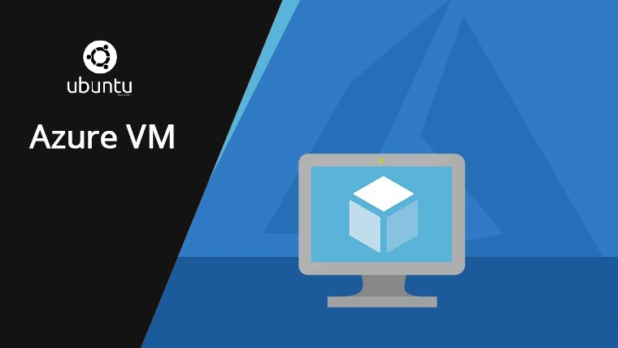

Installation de machines virtuelles (Debian & Ubuntu)
Date : Septembre 2024
Description : Installation et configuration de systèmes Debian et Ubuntu dans VirtualBox. Ces machines ont été configurées avec des paramètres spécifiques pour des environnements de développement et d'apprentissage.
 Voir le tutoriel Voir sur GitHub
Voir sur GitHub